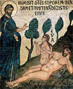

Es el comienzo de "Una temporada en el infierno", de A. Rimbaud (escrito a los 18 años).
-
Antaño, si mal no recuerdo, mi vida era un festín en el que todos los corazones se abrían, en el que todos los vinos corrían.
Una tarde, me senté a la Belleza en las rodillas. - Y la encontré amarga. - Y la cubrí de insultos.
Me armé contra la justicia.
Escapé. ¡Oh brujas, miseria, odio: a ustedes se les confió mi tesoro!
Logré que se desvaneciera en mi espíritu toda la esperanza humana. Sobre toda alegría, para estrangularla, salté como una fiera, sordamente.
Llamé a los verdugos para, mientras perecía, morder las culatas de sus fusiles. Llamé a las plagas para ahogarme en la arena, en la sangre. La desgracia fue mi dios. Me tendí en el lodo. Me dejé secar por el aire del crimen. Y le hice muy malas pasadas a la locura.
Y la primavera me trajo la horrorosa risa del idiota.
Ahora bien, últimamente, habiendo estado a punto de soltar el último ¡cuac!, se me ocurrió buscar la clave del antiguo festín, en el que había, quizá, de recobrar el apetito.
La caridad es esa clave. — ¡Semejante inspiración demuestra que todo fue un sueño!
"Seguirás siendo hiena, etc.", exclama el demonio que de tan amables adormideras me coronó. "Gana la muerte con todos tus apetitos, y tu egoísmo, y todos los pecados capitales."
¡Ah! Ya he aguantado demasiado. Pero, querido Satanás, te lo suplico, menos irritación en la pupila. Y mientras van llegando las pequeñas cobardías que faltan, para ti, que tanto valoras en el escritor la carencia de facultades descriptivas o instructivas, arranco unas cuantas páginas repelentes de mi cuaderno de condenado.
Y sin embargo, a Rimbaud no le he tirado a la basura, al menos no todavía. Hay cositas, como esa, que me siguen acompañando (será que lo releí tantas veces...). Y, releyéndolo hoy -y a eso viene el post- me detengo en eso de la caridad como clave para recuperar el apetito del festín de antaño.
Porque recuerdo, de mi manoseada edición, la explicación del traductor (tipo tan pedante como chato, especialista en denigrar a los colegas; lamento sí que sus comentarios me hayan quedado casi tan grabados como el mismo texto de Rimbaud), que se encargaba de advertir a sus lectores: no vayan a creerse que Rimbaud está remotamente dando por bueno eso de que la "caridad es la clave" (por favor!...). Es una ironía, y la frase que completa el párrafo lo confirma. Se trata de
- ... el mismo juego de afirmación/negación:
- "¡nos hemos salvado, la caridad es la clave! "
- "hay que ser tonto para pensar semejante cosa!"
Yo ahora lo leo así: a la pregunta "cuál es la clave", viene la respuesta "la caridad". Entonces, dando por buena (aunque sea hipotéticamente) esta "inspiración", se deduce que "todo ha sido un sueño", ("cette inspiration prouve que j ái rêvé!"), es decir, que mis años pasados -buscando la salvación en la sensualidad, poética o no- han sido un delirio.
No estoy nada seguro de que esto sea lo que pensaba Rimbaud cuando escribió esto (no estoy seguro de que alguien lo sepa; quizás ni el mismo Rimbaud), pero provisionalmente prefiero creerlo. Y no por ganas de canonizar a Rimbaud[*], que ya sabemos que después no se metió en un convento, precisamente. Simplemente, "me cierra" mejor.
Además, uno también tiene sus placeres perversos; como el de imaginar la furia que estas hipótesis despiertan en nuestros queridos intelectuales.
Y aunque no estoy seguro de eso, ni de casi nada, sí estoy seguro de lo otro: la caridad es la clave, nomás, creyéralo o no el pobre Rimbaud.
[*] Es sabido, de todas maneras, que Claudel lo tiene como un factor fundamental en su conversión.
La Iglesia (bueh... en el sentido menos propio de la palabra) "fijó las prioridades para la nueva evangelización", dice La Nación, según el célebre eclesiólogo (o algo así) José Ignacio López.
Habla de los "próximos desafíos" (expresión muy empresaria, como debe ser) de "espacios de poder" y de "nuestro sistema democrático". Prodiga sustantivos tales como "cambio", "renovación", "identidad", "sociedad", "crisis", etc; tampoco faltan los adecuados adjetivos ("valores fundamentales", "perseverante tarea", "insospechable consecuencia" "inequívoco sentido"), verbos ("trasuntar", "actualizar", "invitar", "construir", "discernir", "superar") y adverbios ("concreta y cotidianamente", "seriamente", "decisivamente", "cristianamente" !).
Quedan así párrafos tan poderosos que dejan chiquito a San Juan Crisóstomo:
-
....El documento refleja los criterios de la Iglesia frente a la realidad política y social. Asimismo, a la vez que invita al cambio y a la renovación de la vida eclesial -con la autocrítica y el reconocimiento de responsabilidades que ello supone- es también un llamado a construir una espiritualidad de comunión y a expresarla concreta y cotidianamente en la perseverante tarea de reconstruir los vínculos de una sociedad que se ha asomado peligrosamente a la disgregación. ...
Aunque sin ninguna mención explícita al Diálogo Argentino, los criterios y el espíritu que brotan del reciente documento episcopal sustentan y conceden el inequívoco sentido de acción pastoral al compromiso asumido por la Iglesia al ofrecer su ámbito y contribuir decisivamente a alentar y acompañar la construcción de ese espacio puesto al servicio de la recuperación del sentido del bien común y del restablecimiento de los vínculos sociales.
Y un interrogante que me queda... ¿ el que
pensó el título del documento episcopal "Navega mar adentro",
será el mismo que ideó lo de "Argentina, canta y camina!"
de la "Oración por la patria" ?
Digo, porque... si fuera así, me daría un poco miedo (podría ser un obispo).
Aunque, si fueran dos personas distintas, debería darme más miedo
todavía (podrían ser dos obispos).
PD: Me advierte algún que otro lector sobre lo de "Navega mar adentro":
- Bestia! eso no es invento de los obispos de acá: proviene del Papa, que lo usó en Novo Millenium Ineunte !
- Este... bueno, tampoco el Papa es un garantía para elegir títulos; fijate "Cruzando el Umbral de la Esperanza", yo no sé a vos qué te parece pero ...
- Pero, que título ni título, pedazo de animal! leé el texto ! "Duc in altum": no es invento de Juan Pablo II, sino de uno que está un poco más alto... te suena ?
- Bien ! Más a mi favor ! Es malgastar un versículo del evangelio; pólvora en chimangos, en el mejor de los casos.
- Ah, pero sos incorregible!
- Bueno, no tanto.
- Mejor leé primero y criticá después.
- Ah, pero... aunque quisiera... :
-
«La versión digitalizada [de "Navega mar adentro"]
para Microsoft (???)
va a demorar un tiempo porque tiene una composición muy compleja a tres columnas (???)
y con más de trescientas celdas (????). Toda la atención se ha puesto en la versión impresa. La digitalización se preparará con tiempo.»
[*]
La página del Teatro San Martín anda con problemas, así que -aunque más no sea para mí- trascribo el programa del ciclo de Bresson:
Jueves 10: Los ángeles del pecado (1943)Viernes 11: Las damas del bosque de Boulogne (1945)- Sábado 12: El carterista (Pickpocket ; 1959)
- Domingo 13: Diario de un cura rural (1950)
- Martes 15: Un condenado a muerte se escapa (1956)
- Miércoles 16: El proceso a Juana de Arco (1961)
- Jueves 17: Al azar Balthasar (1966)
- Viernes 18: Mouchette (1967)
- Sábado 19: Una mujer dulce (1969)
- Domingo 20: Lancelot du Lac (1974)
- Lunes 21: El diablo, probablemente (1977)
- Martes 22: El dinero (1983)
Teatro San Martín (Corrientes 1530, Buenos Aires); sala Leopoldo Lugones.
 Hoy, 11 de julio, es el día de San Benito, abad (siglo VI).
Hoy, 11 de julio, es el día de San Benito, abad (siglo VI).
Es el creador de la regla benedictina
(la más antigua).
patriarca de los monjes (de occidente al menos).
Nombrado patrono
de Europa por Juan Pablo II.
De la pintoresca vida que escribió San Gregorio Magno, una de las anécdotas más célebres:
-
Un día, estando a solas , se presentó el tentador. Un ave pequeña y negra, llamada vulgarmente mirlo, empezó a revolotear alrededor de su rostro, de tal manera que hubiera podido atraparla con la mano si el santo varón hubiera querido apresarla. Pero hizo la señal de la cruz y el ave se alejó.
No bien se hubo marchado el ave, le sobrevino una tentación carnal tan violenta, cual nunca la había experimentado el santo varón. El maligno espíritu representó ante los ojos de su alma cierta mujer que había visto antaño y el recuerdo de su hermosura inflamó de tal manera el ánimo del siervo de Dios, que apenas cabía en su pecho la llama del amor. Vencido por la pasión, estaba ya casi decidido a dejar la soledad. Pero tocado súbitamente por la gracia divina volvió en sí, y viendo un espeso matorral de zarzas y ortigas que allí cerca crecía, se despojó del vestido y desnudo se echó en aquellos aguijones de espinas y punzantes ortigas, y habiéndose revolcado en ellas durante largo rato, salió con todo el cuerpo herido.
Pero de esta manera por las heridas de la piel del cuerpo curó la herida del alma, porque trocó el deleite en dolor, y el ardor que tan vivamente sentía por fuera extinguió el fuego que ilícitamente le abrasaba por dentro. Así, venció el pecado, mudando el incendio.
De la película de Bresson de anoche (comentaremos después, si acaso) me quedó dando vueltas la melodía de la Salve Regina que cantaban las monjas.
Hay muchas versiones -en Canto Gregoriano- de la Salve; ésta ( mp3) , silábica y sencilla, parece ser la más popular.
Pero la de la película
también es conocida; no es tan fácil porque no es silábica,
es melismática (qué es eso ? que tiene muchos melismas; y
qué es un melisma ? es un grupo de notas -ligadas- que corresponden
a una sola sílaba -o fonema- ; más).
Igual, no es difícil, es muy linda y estoy seguro de que
vale la pena memorizarla
(cosa que me propongo hacer).
Busco pues y encuentro esta página con mp3s de canto gregoriano (y otros) y allí esta el Salve Regina
en esta versión melismática. Y también encuentro
la partitura
(con Real Audio).
La notación cuadrada es relativamente
fácil de seguir (lo único que vale la pena mencionar es
que dos notas encimadas verticalmente corresponden a un ligado
ascendente), pero si quieren más detalles, acá
hay una explicación; o bien, en castellano, acá.
Empieza hoy el ciclo de películas de Bresson en el teatro San Martín, con "Los ángeles del pecado", su primer obra.
Para no dejar pasar: este fin de semana , el "Diario de un cura rural" y "Pickpocket"; y el miércoles el "Proceso a Juana de arco".
Dostoyevsky y Pascal son de los escritores que tengo entre los más queridos. Hace mucho tiempo que me acompañan, y además de una cuestión de gratitud -me ayudaron en mis malos tiempos- el asunto es que los sigo considerando grandes, y los releo con gusto (por no decir "devoción").
Bien.
Hojeando "Echar Raíces", textos de Simone Weil (otra que
quiero mucho, pero acá se trata de una recién llegada a mi mundo,
exótica y deslumbrante, acaso no tan confiable)
encuentro que, en una misma página le tira un palo feroz a
uno ("... la peor de las blasfemias...")
y a otro ("...crimen de falta de probidad...").
No estoy seguro de estar de acuerdo con las acusaciones, y todo lo que lo rodea (que no es poco; Simone escribe muy concentrado) ; pero, si me apuran -aunque por qué me irían a apurar?-, diría que le doy la razón a ella.
Por otro lado, la referencia a la "mala conciencia" de los cristianos (hablando en general, claro está) y su falta de probidad intelectual, tiene alguna relación con lo del post anterior.
-
....De modo que el cristianismo, de hecho, y con la excepción de algunos focos de luz, es una cuestión de conveniencia relativa a los intereses de quienes explotan al pueblo.
No es de extrañar entonces que desempeñe un papel muy mediocre, en estos momentos, contra la forma actual del mal.
Y ello tanto más cuanto que, incluso en los ambientes y en los corazones en los que la vida religiosa es más sincera e intensa, con harta frecuencia hay en su centro mismo un principio de impureza debido a una insuficiencia del espíritu de verdad.
La existencia de la ciencia da mala conciencia a los cristianos. Pocos de ellos se atreven a estar convencidos de que, si partieran de cero y consideraran todos los problemas anulando sus preferencias, en el espíritu de un examen absolutamente imparcial, el dogma cristiano se les aparecería total y manifiestamente como la verdad.
Esta incertidumbre debería debilitar sus vínculos con la religión; no ocurre así, y es que la vida religiosa les proporciona algo que necesitan. Sienten más o menos confusamente que están vinculados a la religión por una necesidad. Pero la necesidad no es un vínculo legítimo del hombre a Dios. Como dijo Platón, hay gran distancia entre la naturaleza de la necesidad y la naturaleza del bien.
Dios se da al hombre gratuitamente y por añadidura, pero el hombre no debe desear recibirle. Debe entregarse totalmente, incondicionalmente, y por el motivo único de que tras haber errado de ilusión en ilusión en la búsqueda ininterrumpida del bien, está seguro de haber discernido la verdad volviéndose hacia Dios.
Dostoievski profirió la peor de las blasfemias cuando dijo: «Si Cristo no es la verdad, prefiero estar con Cristo lejos de la verdad». Cristo dijo: «Yo soy la verdad». También dijo que era pan, que era bebida; pero dijo: «Yo soy el verdadero pan, la verdadera bebida», es decir, el pan sólo de la verdad, la bebida sólo de la verdad. Hay que desearle primero como verdad, y sólo a continuación como alimento.
...
Ya Pascal cometió el crimen de falta de probidad en la búsqueda de Dios. Habiendo formado su inteligencia en la práctica de la ciencia, no se atrevió a esperar que si daba vía libre a esa inteligencia encontraría una certidumbre en el dogma cristiano. Y tampoco se atrevió a correr el riesgo de tener que prescindir del cristianismo. Emprendió una búsqueda intelectual decidiendo de antemano adónde debía llevarle. Para evitar cualquier riesgo de ir a parar a otro lado se sometió a una sugestión consciente y deseada. Tras de lo cual buscó pruebas.
En el ámbito de las probabilidades, de los indicios, percibió cosas muy fuertes. Pero en lo que se refiere a pruebas propiamente dichas, las que apuntó eran miserables: el argumento de la apuesta, las profecías, los milagros. Y lo que es más grave para él es que jamás alcanzó la certidumbre. Nunca obtuvo la fe, y ello porque trató de procurársela.
...
Dios no puede ser para el corazón humano una razón de vivir como lo es el tesoro para el avaro.
Harpagon y Grandet amaban su tesoro; se habrían hecho matar por él; habrían muerto de desdicha por su causa; habrían realizado por él maravillas de valor y de energía.
Es posible amar a Dios así. Pero no se debe. O, más bien, sólo a determinada parte del alma le está permitida esta especie de amor, puesto que no es capaz de experimentar ninguna otra; pero debe quedar sometida y abandonada a la parte del alma que vale aún más.
...
 Me escribe un ateo, de esos militantes.
Me explica que Dios no existe, que la Biblia tiene errores. Entre otras cosas, me informa que el sexo viene determinado por un par de cromosomas (XX para la mujer, XY para el hombre) y que por lo tanto ("conclusión probada fehacientemente") es imposible que la mujer (Eva) haya sido hecha del hombre (Adán).
Y apela a la autoridad de Discovery Channel , nada menos.
Para ser sincero, creo que el catolicismo tiene buena parte de culpa en el hecho de que exista este tipo de ateísmo. Si hay gente -con inteligencia, cultura y voluntad no muy por debajo de la media- que cree en la fuerza de esos "argumentos", es que hay cristianos que también lo creen (o lo han creído; o lo han hecho creer). Tienen los ateos que se merecen.
[pd: esto último ha despertado cierta perplejidad en algunos lectores; ya veremos de extendernos para que se entienda mejor, o no]
Dijo Saramago, dice La Nación de hoy, que hay que cuidar el idioma castellano. Bien.
En la misma edición, dice que Kirchner
señaló la necesidad de que este tipo de programas se alejen "de toda orientación clientelista".
Parece claro que los periodistas se tomaron en serio lo de Saramago, y quisieron
mejorar algo el castellano presidencial.
Cómo ? Pues sí, si se fijan (si escuchan)
comprabarán que la versión que trae Clarín, es más pior, pero también es más fiel:
-
...la necesidad de que este tipo de programas se alejen "de toda orientación clientelística".
Habrá querido decir, "más graves", supongo yo. Pero es claro que para un diputado, una palabra tan de simple, de sólo dos sílabas... queda chica.
-
"Avizoro que ha de sobrevenir en principio una resolución acusatoria de la Cámara de Diputados porque se encontrarían elementos idóneos que justifiquen una acusación"
Curiosidades musicales -intrascendentes- que encontré o reencontré estos días:
1. "Volvió una noche", de Gardel (el zorzal tampoco es moco de pavo como compositor, no va a creer...) está en MI menor, y el estribillo en DO; combinación muy rara en el tango, y en casi toda la música popular.
2. "Bienvenidos al tren", de Sui Generis, está en ritmo de 3/4. Nada del otro mundo, y fácil de advertir, pero no me había fijado hasta que lo vi escrito ayer. Los ritmos ternarios son bastante esporádicos en el rock.
3. "Ludmila" , linda canción de Spinetta, está en 5/4 (2/4 + 3/4); también me di cuenta hace poco, pero escuchandola. Son muy escasas las canciones en cinco tiempos, y más en el rock; algo en el jazz y en algunos folkores, creo...
Y ya que estamos en el tema musical, y ya que ayer dejé pasar el domingo sin criticar nada de la misa...
La canción esa, ya de por sí es bastante feíta (letra y música), pero....
- "Prueben qué bueno es el Señor / hagan
la prueba y veanló/
dichoso aquel que busca en él refugio .... Oh-ó oh-ó!
Aaaghhh!... ese "Oh-ó oh-ó!"! (con guitarras!)...
Suerte que uno (todavía) no va misa armado, que si no...
Me pasa Ignacio una hermosa noticia (para mí) : parece que, después de casi dos siglos, beatificarán a Ana Catalina Emmerich [más].
Estoy muy sorprendido (no sabía que se estaba tramitando...) y absurdamente contento.
A ver si esto, junto con lo de Mel Gibson, torna un poco más conocida a esta monja, tan admirada por mí y otro pocos. Y a ver si las editoriales católicas le hacen un lugarcito...
Contaremos un poco más de Ana Catalina -al lado de quien, según el decir de Leon Bloy, los más grandes poetas de la humanidad son caca de mosquito- más adelante.
-
... recuerdo también las palabras del cura de Torcy:
«Tú no estás hecho para la guerra de desgaste». Y hasta
ahora, ésa ha sido la única lucha que he afrontado.
Si me curara, Dios mío! Si la crisis que sufro fuera
el primer síntoma de la trasformación física
que a veces acompaña a los treinta años...
Una frase que leí no sé dónde me obsesiona desde
hace días: "Mi corazón está con los que pelean
en la avanzada, mi corazón está con los que se
hacen matar". Los que se hacen matar... Soldados,
misioneros...
El tiempo se complementa de manera admirable con
mi ... iba a escribir "mi alegría" pero la
palabra no sería justa. Espera, convendría
mejor. Sí; una grandiosa, una maravillosa espera
que alienta incluso durante el sueño; pues ella
en verdad me ha despertado esta noche.
Me encontré con los ojos abiertos, en la oscuridad,
y tan dichoso que la impresión era casi dolorosa,
a fuerza de ser inexplicable. Me levanté, bebí
un vaso de agua, y pasé rezando hasta el amanecer.
Era como un gran murmullo del alma. Aquello me hizo
pensar en el inmenso amor de los follajes que precede
al despuntar del día.
¿Qué día va a despuntar en mí? ¿Me ha concedido Dios una gracia?
Georges Bernanos
Diario de un cura rural